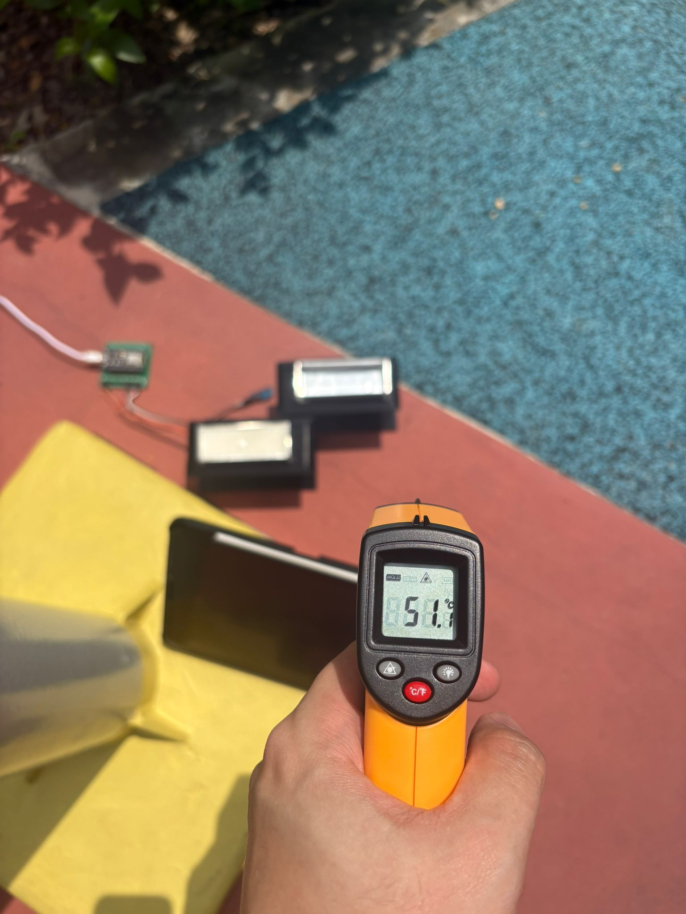

Passive-cooled bus shelter · phase-change material
Cooler, by melting.
A bus shelter roof and bench infused with a natural coconut-and-palm wax that absorbs heat as it melts — keeping commuters cooler with no electricity and no moving parts.
The problem
Waiting at a Singapore bus stop is a heat problem.
Bus stops can exceed comfortable temperatures during long waiting periods. Standard shelter materials — sheet-metal roofs, metal and plastic benches — heat up immediately under solar load and radiate that heat straight back at the people waiting beneath them.
Cooling trials have been run at Singapore bus stops before — Airbitat, Sol-Cool, and LTA fan trials — but every one of them is active: fans, misting, or refrigerant systems that need power, water, and maintenance at every single stop. That recurring burden is exactly what limits them from scaling across the island's bus stop network.
The physics
Heat that melts wax can't heat the bench.
CoolStop's roof and bench panels contain a sealed layer of a coconut-and-palm wax blend, with a melting point tuned to sit near Singapore's hot-weather ambient temperature — so it switches on precisely during the hottest part of the day.
Solid wax, cool panel
The panel starts the day with the wax fully solid, behaving like any shelter surface as temperatures rise.
Latent heat kicks in
At the tuned melting point, incoming heat is spent breaking the wax's solid structure instead of raising its temperature.
The melt plateau
While melting, the surface holds a lower, near-constant temperature — instead of climbing the way bare metal does.
Reset by sunset
After dark, the wax releases stored heat and re-solidifies, ready to absorb the next day's peak all over again.
Measured results · field test 05 Jul 2026
Two identical panels. One filled with wax. 20 minutes of Singapore sun.
Two matching panel housings — one containing the sealed coconut/palm wax blend, one empty control — were placed side by side under direct early-afternoon sun, with surface temperature logged every 15 seconds by paired sensors on a microcontroller datalogger.
Peak PCM panel surface temperature — while the control panel beside it reached 50.7 °C.
Temperature difference at peak. The PCM panel ran 6.4–10.6 °C cooler across the whole heating phase (mean −8.5 °C).
PCM heating rate in °C/min, before and after ~40 °C — the slowdown consistent with melt onset absorbing heat.
When shading ended the exposure, the PCM panel cooled more slowly and crossed the control — stored latent heat being released, as required for overnight reset.

Why this material
Six concepts in, one survived Singapore's constraints.
Every concept was tested against two hard filters: real local sourcing (deployment-grade materials, not lab proxies — a supervisor requirement) and physical viability under Singapore's humidity and HDB shadow conditions.
| Concept | Why it was ruled out |
|---|---|
| ✕Mist fans (solar pump) | Already trialled in Singapore (Airbitat, Sol-Cool); active system with power and maintenance burden |
| ✕Sun-tracking reflective panels | Limited under HDB shadow conditions; introduces moving parts |
| ✕Electrochromic smart glass | True electrochromic film unsourceable locally — only PDLC available |
| ✕Venturi / thermal-chimney geometry | Undermined by Singapore's humidity and low-wind conditions |
| ✕Salt-hydrate PCM (Glauber's salt) | Sodium sulfate decahydrate unsourceable locally in usable form |
| ✓Coconut + palm wax PCM blend | Locally sourceable with multi-day SG delivery; deployment-grade; melting point in the useful range |
How it's different
Active systems cool one stop. Passive panels can cool a network.
| Active trials (Airbitat · Sol-Cool · LTA fans) | CoolStop | |
|---|---|---|
| Energy input | Electricity required at every stop | None |
| Moving parts | Fans and pumps | None |
| Consumables | Water for misting / refrigerant | None |
| Ongoing cost | Power plus scheduled maintenance | Passive material, minimal upkeep |
| Path to scale | New infrastructure per stop | Panel integration into existing shelter forms |
Design process & roadmap
Material first. Geometry second. Deliberately.
We are holding the shelter's PCM cavity thickness open in CAD until the material data exists — to avoid locking in a design before the wax's real behaviour is confirmed.
Concept exploration
Surveyed active cooling approaches — misting, reflective tracking, electrochromic glazing, chimney-effect geometry — and eliminated each on sourcing feasibility or physics under local conditions.
Phenomenon & material selection
Pivoted from moving heat away to absorbing heat in place via latent heat; confirmed a locally sourceable coconut/palm wax blend with a melting point near hot-weather ambient temperature.
Material characterisation
Side-by-side outdoor testing of a sealed wax panel against an identical control panel under direct sun, with paired sensors logging surface temperature every 15 seconds — capturing heating rates, peak temperatures, and heat-release behaviour on cooldown.
Shelter design in SolidWorks
Modelled to standard Singapore bus stop dimensions, with PCM cavity thickness informed by the Track 1 material results.
Full-scale panel & field testing
Prototype panel under real sun exposure; validate day–night thermal cycling — specifically whether the wax fully re-solidifies overnight to sustain cooling on consecutive hot days.
Live bus stop pilot
Approach LTA or transport operators about pilot deployment at an operational bus stop.
Measured results — melt plateau temperature, differential versus a control surface, and plateau duration under heat-lamp conditions — will be published on this page. We would rather report real data carefully than illustrative data early.